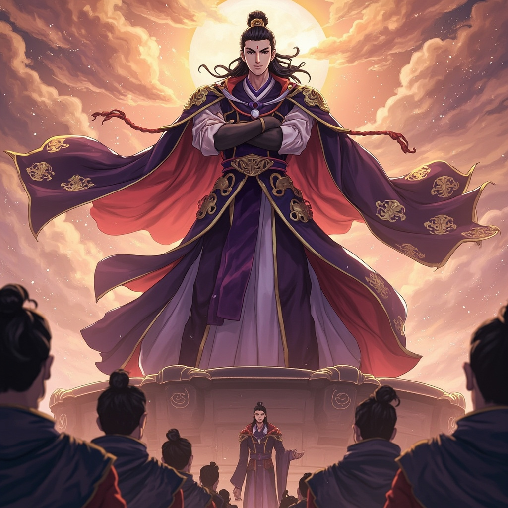
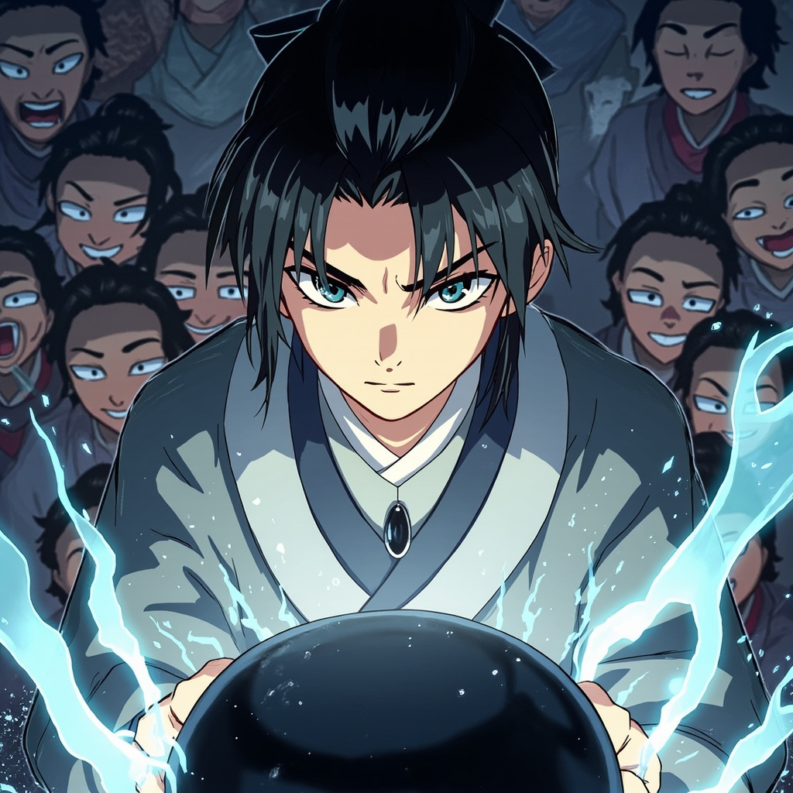
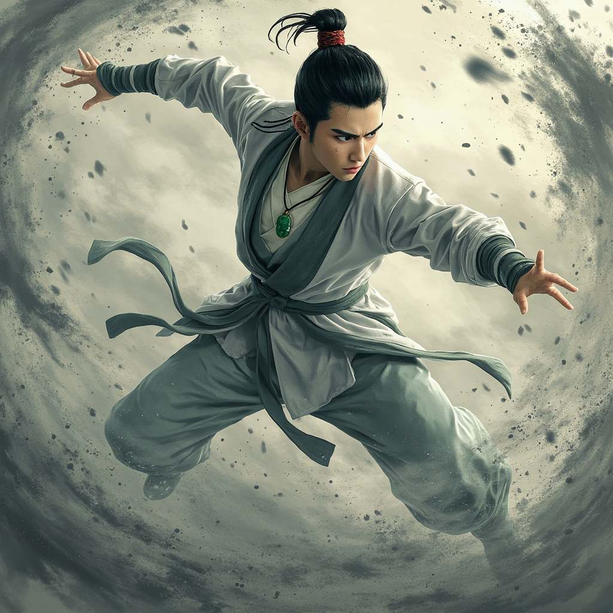
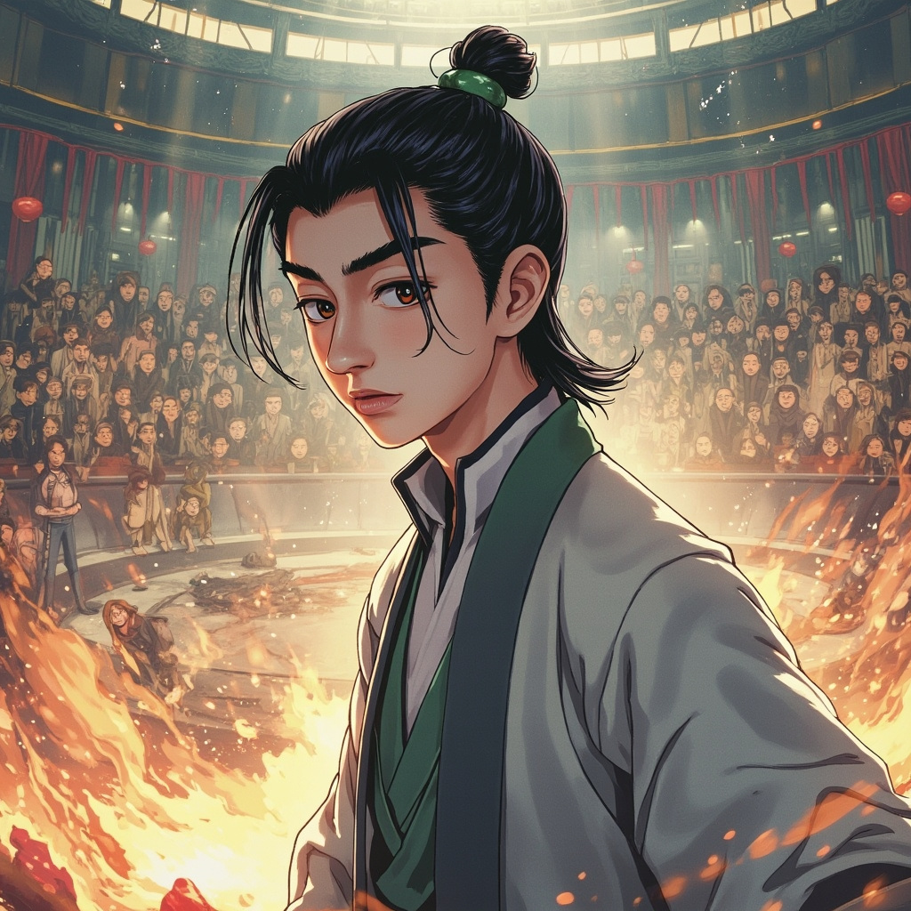

萬古塵埃 · 彩色CG漫畫版
第二天清晨，天剛蒙蒙亮。
葉塵站在旁系隊伍的最後一排，低頭看著自己的腳尖——
體內的灰色漩渦已經比昨天大了一倍。

「你這個廢物也敢來參加大比？」
葉天霸站在高臺上，雙手抱胸，嘴角掛著一抹嘲諷的笑容。
「別到時候連一個回合都撐不過，丟我們葉家的臉。」
「今天的大比分為三個項目：拳腳對決、靈氣測試、以及實戰模擬。」
周明遠站在測靈石前，聲音不大，但整個演武場瞬間鴉雀無聲。
「現在，請所有參賽者到測靈石前進行登記。」

葉塵將右手放在冰冷的石碑表面。閉眼，感受——
什麼都沒有發生。
測靈石死寂無聲，連一絲微弱的光芒都沒有。
「果然還是廢物。」

葉塵的動作很慢——
但他的拳頭穿過灰塵流動的方向，精準地擊中了葉青陽的腹部。
一股奇怪的力量在對手體內翻湧，像是一粒粒細小的沙子。
葉青陽踉跄後退，最終跌坐在擂台下。

「剛才那是什麼招式？」
「葉塵什麼時候變得這麼強了？」
「不對，他的靈氣波動明明還是零啊！」
高臺上的葉天霸眯起了眼睛，目光中第一次出現了一絲警惕。
「葉塵，你剛才用的不是葉家任何已知的拳法。」
周明遠皺眉道：「你是從哪裡學來的？」
葉塵抬頭看了他一眼：「我不知道。我只是……順著空氣的流動出拳。」
葉塵下意識地摸了摸頸間的玉墜——
它比之前更亮了，裂縫中透出微弱的金光。
在他出拳的那一刻，丹田裡的灰色漩渦轉動速度加快了整整一倍。
而在漩渦深處，一粒微小的塵埃緩緩睜開了眼睛。